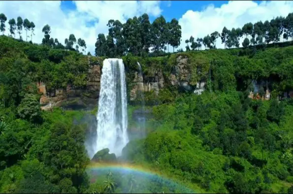

Fly into Entebbe and overnight at the booked hotel . On the next day, transfer to Murchison Falls NP
with en route rhino tracking in Ziwa rhino Sanctuary.Procced to the edge of Kibale forest.
Bigodi wetlands excursions and connect to Queen Elizabeth NP. Afterward, transfer to Bwindi via Ishasha area
known for its tree climbing lions.Enjoy gorilla trekking in Bwindi before relaxing at lake
lake mburo. Lastly return to Entebbe Airport

Upon your arrival at Entebbe International Airport, our tour guide will welcome you to Uganda
Thereafter, you will transfer to the booked accommodation. You will check in and have a rest
Have breakfast and then hit the road for Zziwa Rhino Sanctuary.Once in Zziwa Rhino, you
procceed for an hour of on-foot rhino tracking. Then afterr drive off to Masindi where you will have a lunch
.
stop , after lunch you continue for Murchison NP.After reaching there chech into the booked accommodation
You can either decide to have a game drive first and finally .procceed to the accommodation, other wise
you can go straight to the accommodation and have a rest
Accommodation: Ikorom Safari Lodge- bugdet level
Meals : breakfast, lunch, Dinner
Have breakfast, depart for an early morning game drive across the rolling plains of Uganda's
largest national park and be on the look wildlife including: lions, leopards among others
For any birder, thereare many quite number of birds to watch during the drive.After return
to the accommodation for some rest and lunch.
After lunch you will procceed for boat trip to the base of Murchison falls, While on the boat trip
you will see hippos and few bird species after return to your accommodation
Accommodation:Accommodation: Ikorom Safari Lodge- bugdet level
Meals : breakfast, lunch, Dinner
We will have breakfast in the morning and then drive to the top of the water falls
to truly appreciate the beauty and magicence of the murchison falls. thereafter you
embark on the transfer for kibale NP. The drive is quite long but incredibly scenic passing
through villages, lush green countryside and hills dotted with tea plantations that characterize this
part of uganda.the beauty scenery will amaze you all the way. Upon the arrival at the accommodation
check in and relax
Accommodation :Kibale forest lodge
Meals: breakfast, Lunch, Dinner
drive time 6-7 hours
Have breakfast and procceed for Bigodi wetlands excursion. Bigodi wetland boast of extensive array of biodiversity
among which are serveral primates' species like the black and monkeys, red-tailed monkeys and baboons
The Bigodi wetland is also a paradise for bird watchers. Among the major bird species wuthin the area is the
Great Turaco. From Bigodi we shall embark on a transfer to Queen Elizabeth NP
You will reach Queen Elizabeth early enough and have lunch , rest an procceed for game drive .During the drive
you will look at wild animals like reedbuck, elephant , lions among others thereafter return to your accommodation
Accommodation:Iguru Safari Lodge-
Meals: breakfast, lunch, dinner
Have breakfast and drive out to the nearby Kalinzu Fores Reserve. The forest is the home to habituated
Chimpnzees and other primates including baboons monkeys and also bird species
You will spend the early part of the day tracking Chimpnzees here. Thereafter return to the accommodation
for some rest and lunch, you will go for a 2 hour boat trip on trip-kazinga channel that connects lake
George and Edward.
During the trip you sight wildlife including giant hippos, elephants and crocodiles among others.,
Thereafter late afternoon game drive and return to accommodation
Accommodation: Iguru Safari Lodge-
meals: breakfast, lunch, Dinner
Be up early an procceed for an early morning game drive in Kasenyi Plains, where you will be able to see buffalos herds of elephants, lions leopards among others. return to the lodge and check out then head to
Ishasha sector in search of tree climbing lions. The chance of spotting these lions is about 70% though some times they are hard to spot (most especially when thye are down the grass looking for prey)
From Ishasha, we shall continue to the accommodationat the edge of Bwindi NP. Once at the accommodation check in and relax. Accommodation:Ride 4 a woman bugdet level
Meals: breakfast, lunch, Dinner.
Have breakfast and then move out for the forest walk along the waterfall trail. Starting from
Buhoma at the north gate, Munyaga river trail gets you to some beautiful pristine water falls- truly
rewarding experience. Along the way you will encounter some fuana and flora, sometimes monkeys among others.
Return to the accommodation, check out and transferto the Ruhija sector of Bwindi where you will
have gorilla trekking the next day. With a strenuous day ahead, so we recommend that you take this
afternoon relaxing.
Accommodation:Broadbill Forest Champ
Meals: breakfast, Lunch and Dinner
Have comes the waited day of this is customized tour. Have breakfastand move to the rangers' post
you will receive some briefing on dos and donts . Thereafter, you will enter the Bwindi Forest for
your adventure.
The beauty of this rain forest is spectacular! The area offers dramatic steeply forested landscape and is
incredibly dense but cisscrossed by numerous animal trails allowing access to tourists.
The time taken and the terrain vary with the movements of the these great primates. Once you have
located a gorilla,you will be allowed an hour in their presence.The thrill of spending time observing these
gentle but endangered giants is unforgettable.
Return to accommodation, check out and transfer to Lake Bunyonyi.. Lake Bunyonyi is
is framed by lush, green-terraced hills that reach a height of (2,200-2,478m) but its the 29 islands of
various shapes and sizes scatttered across the water that make it most magical you admire them all day.
Accommodation: Lake Bunyonyi Eco Restort.
Meals:lunch, breakfast, Dinner
Some room for relaxation on this customized Tour package to Uganda. After days of long drives and of course
the strenuous Golrilla trekking in Bwindi this day is at your disposal for relaxation. All meals will be served
at accommodation.
Accommodation: Lake Bunyonyi Eco Restort.
Meals:lunch, breakfast, Dinner
Have breakfast and set off to Lake Mburo via Mbarara city.
You will arrive at the accommodation in lake Mburo in time and rest before doing evening game drive.
On the game drive, expect to see the
gigantic eland antelopes, zebras topic, buffalos among othres. Later,
relax at the accommodation where you will spend the night
optional (extra cost 30$): If interested you may consider the night game drive to encounter noctural
creatures which will eb a rare sighting compared to the regular daytime sughtings.
Accommodation: Hyena Hill Lodge-
Meals: breakfast, lunch, Dinner
Have breakfast and procceed for the morning park walk in the presence of an armed Uganda Wildlife Authority
ranger guide. On this early morning guided walk, you will have the opportunity to encounter (at aclose range)
zebras,Giraffes and Eland Topi and other antelope, cape buffalosa among othres. Thereafter return to accommodation
have lunch and check out then hit the road to Entebbe International Airport to catch the flight,
This will make the end of 12 days safari in Uganda ( The pearl Of Africa)
| Number of Travellers | Price |
| single Traveller | $ 6,655 |
| Couple | $ 5,105p/p |
| tripple | $ 4,318 p/p |
| 4 people | $ 3,955 p/p |
| 5 people | $ 3,591 p/p |
| 6 people | $ 3,395 p/p |
✔Meals specified and accommodation in the suite facilities.
✔Ground transportation in a comfortable 4*4 safari car.
✔Applicable park entrance, activity fees. 40 USD P/P entry.
✔Serivices of full time English speaking driver guide.
✔Rhino tracking fee USD 50 P/P (ADULTS)
✔All boat trips as an the
✔orilla trekking permit (USD 800) Per person.
✔Chimpanzee trekking permit per person.
✔Bottled drinking water while on safari.
✔All airport/hotel pick-up and drop-off.
✔Acivities as stipulated (except those stated as optiona).
✗Activities not mentioned in the details.
✗Phone calls and bar bills.
✗Personal/travel insurance.
✗Drivers guide's gratuity (recommende).
✗Flight tickets.
✗Laudary.
✗Entry visa into Uganda.
✗All kinds of drinks apart from water.
✗Any activity stated as optional.
LOCATION: UGANDA
Private, Family- friendly safari


5 Days Wildlife Safari
to Kidep

6 Days Queen Elizabeth and L.Mburo Safari
budget

12 Days
Safari and Golrilla Trekking,

18 Days Rwanda-Uganda Safari Including Gorilla Trekking


GET TO KNOW MORE
APES AFRICA SAFARIS TOURS AND TRAVEL UGANDAWe are specialists in taliored tours and travels in Uganda and East Africa.
Whetherfor individuals,fsmilies or larger groups,
We provide a personalized,high qualityservice.